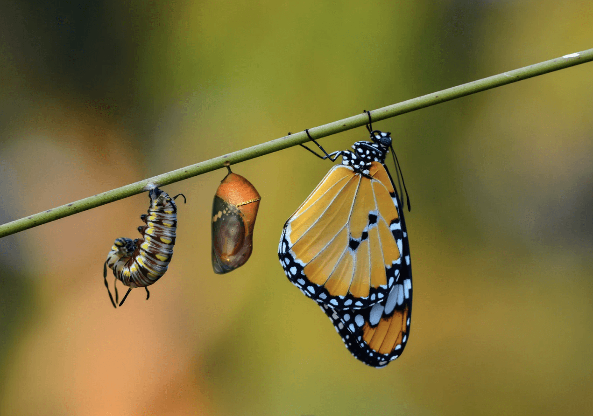

Blog
Blog
Vračanje s porodniškega dopusta: ko se vrneš drugačna
Kako preprečiti izgorelost v podjetjih: kultura ravnovesja, ne žrtvovanja
Kako premagati sindrom vsiljivca (imposter syndrome)
Ko mir v sebi postane pomembnejši od tega, da imaš prav
Samozavest ni nekaj, kar imaš – ampak nekaj, kar gradiš
Avtentično vodenje: Moč resničnega stika
